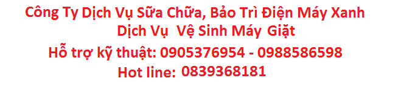

Cách Chăm Sóc Cho Máy Giặt:
Bảo quản cho máy giặt của bạn luôn sạch sẽ không phải là một việc khó khăn nếu bạn làm theo những chỉ dẫn đơn giản dưới đây:
- Sử dụng một lượng bột giặt vừa đủ: Hãy dùng một lượng bột giặt vừa đủ như chỉ dẫn in trên vỏ hộp OMO Matic – có thể bạn sẽ chẳng cần đổ nhiều bột giặt như bạn nghĩ! Quần áo của bạn vẫn sạch sẽ mà lại giảm thiểu được các mảng bám do bột giặt dư thừa gây ra bên trong máy. Nếu nước ở vùng bạn ở là loại nước mềm, bạn sẽ không cần dùng nhiều bột giặt như những vùng khác có độ nước cứng cao hơn – hãy làm theo chỉ dẫn ghi trên nhãn sản phẩm để có được kết quả tốt nhất.
- Xả hết bọt dư thừa: Nếu thấy trong mẻ giặt của bạn có quá nhiều bọt, hãy nghĩ đến việc cho máy chạy thêm một vòng giũ để làm sạch hết các chất giặt tẩy nhé.
- Bắt đầu bằng việc cho máy chạy một vòng giặt không tải với nước nóng.
- Sau khi kết thúc vòng giặt, bạn hãy tắt máy, rút phích điện khỏi ổ cắm và nhúng một chiếc khăn vào hỗn hợp 50% nước nóng cộng 50% giấm để lau sạch bên trong. Nhớ lau thật kĩ cả mép vành lẫn lắp của máy giặt bạn nhé!

Dấu hiệu nhận biết máy giặt nhà bạn đã quá bẩn :
- Giặt không sạch.
- Sau khi giặt quần áo và đồ giặt có mùi hôi.
- Các hạt bụi bẩn nhỏ bám vào quần áo.
- Máy giặt cấp nước quá lâu ( Áp lực nước không thay đổi,tắc van cấp ).
- Quần áo mặc vào cảm giác khó chịu ( ngứa ngáy ).
- Nhìn thấy các mảng bẩn ở khay chứa bột giặt , gioăng của…
Nguyên nhân xuất hiện các mảng bẩn này :
- Do nguồn nước ( nước giếng khoan, nước nhà máy,….).
- Do tần xuất giặt đồ, mức độ giặt nhiều hay hay ít ( 1 lần/ngày hay 1 lần/tuần….).Càng giặt nhiều càng bẩn nhiều.
- Do quần áo, đồ giặt ( người làm văn phòng , người lao động chân tay trong môi trường nhiều bụi…) .
Lưu ý bảo quản máy giặt như sau:
Thông thường sau khoảng 1 năm bạn nên vệ sinh máy giặt một lần. Sau khoảng 2 năm ban nên gọi thợ đến vệ sinh và kiểm tra toàn bộ hệ thống máy giặt.
Việc vệ sinh thường xuyên sẽ giúp máy giặt của bạn hoạt động hiệu quả và tiết kiệm chi phí sửa chữa về lâu về dài. Hãy tham khảo để biết thêm thông tin về cách chăm sóc cho chiếc máy giặt của bạn nhé.
Quý khách cần tìm trung tâm vệ sinh máy giặt tại nhà:
Chỉ cần gọi: Trung Tâm Dịch Vụ Điện Máy Xanh vệ sinh máy giặt tại nhà:
- Hotline: 03.752.915.71
- Kỹ thuật tư vấn sửa chữa tủ lạnh: 090.537.6954 - 098.858.6598